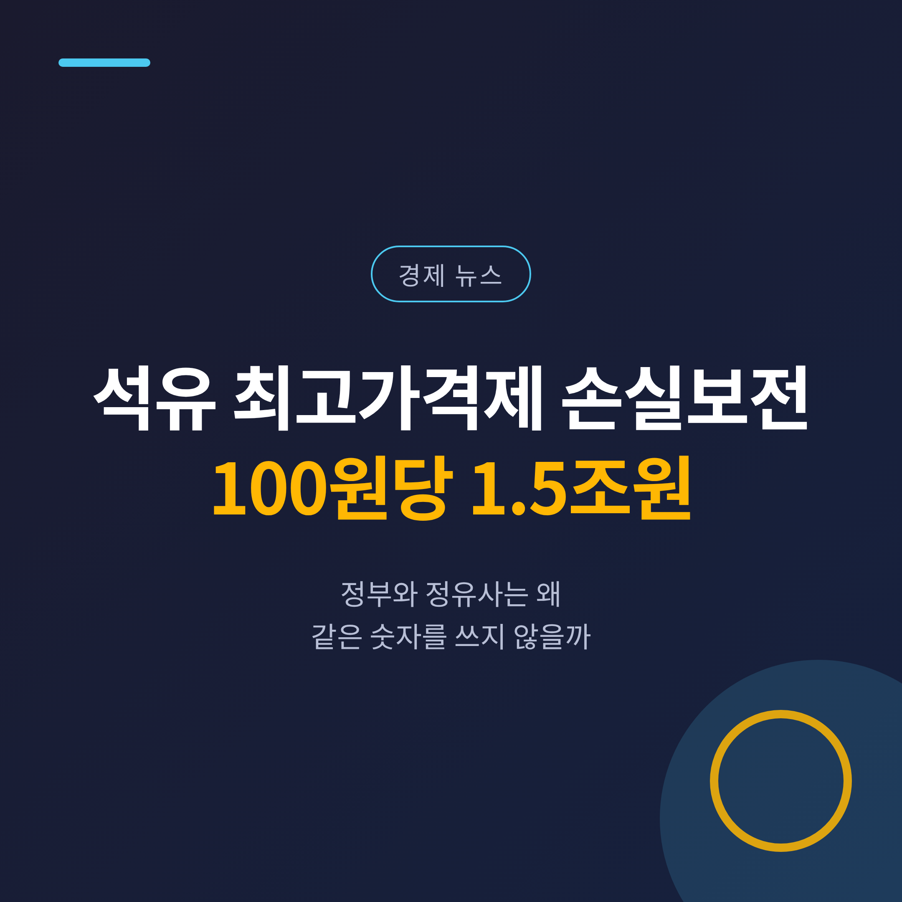
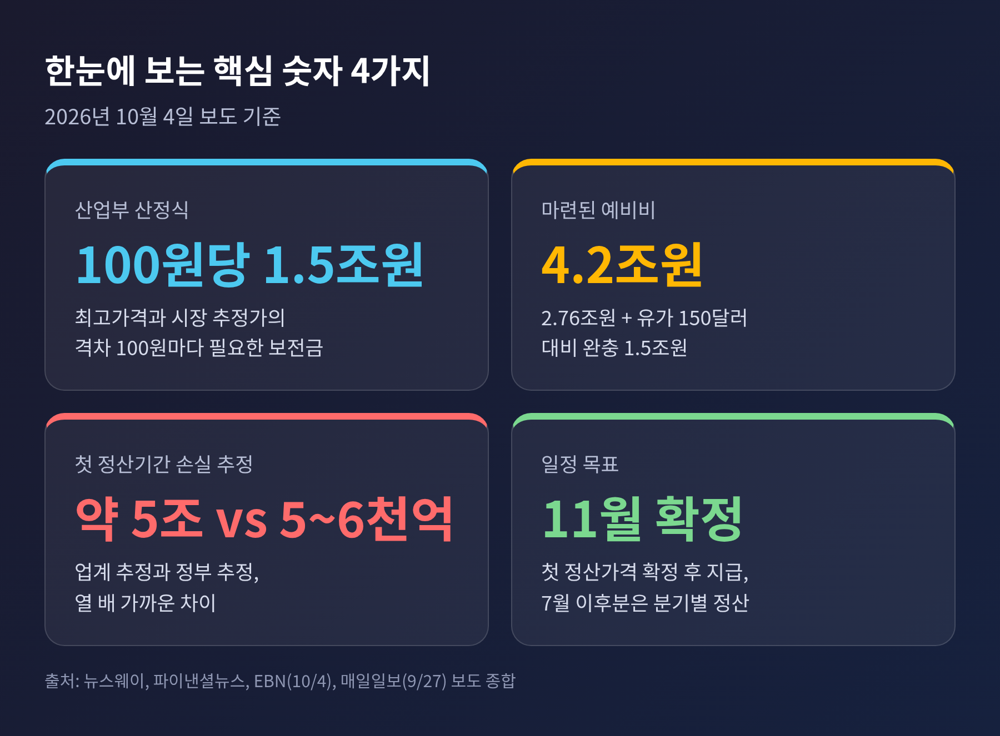
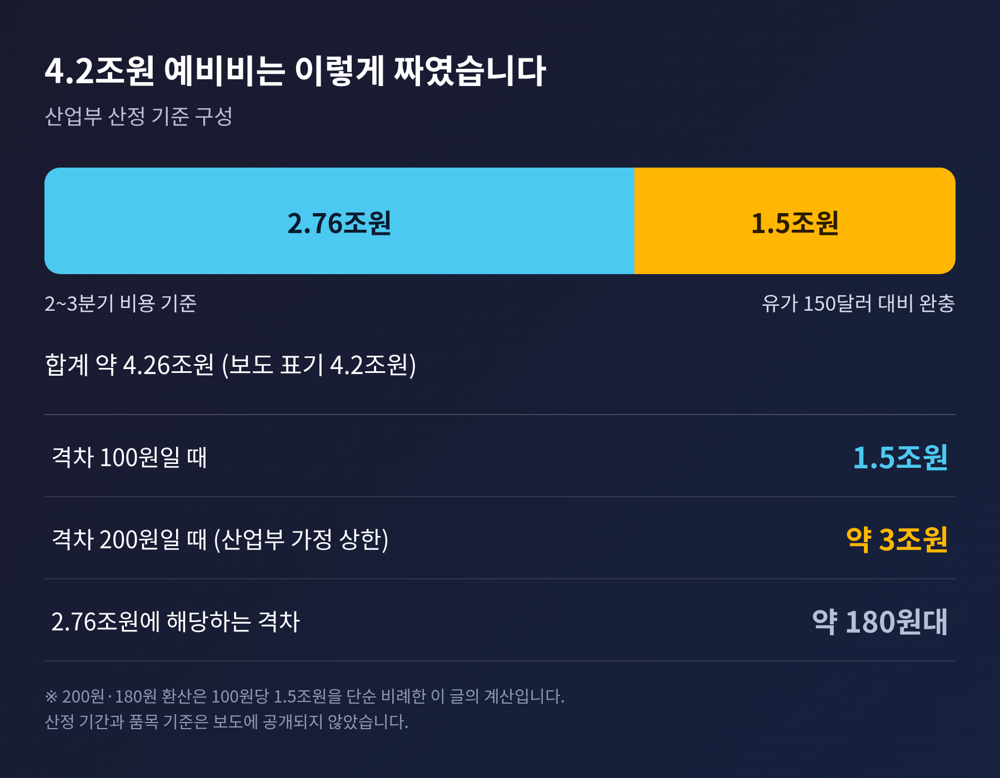
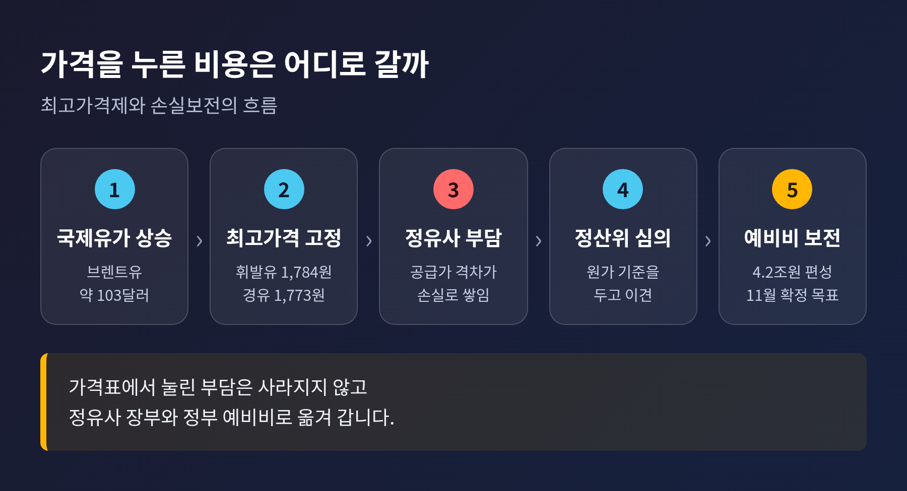
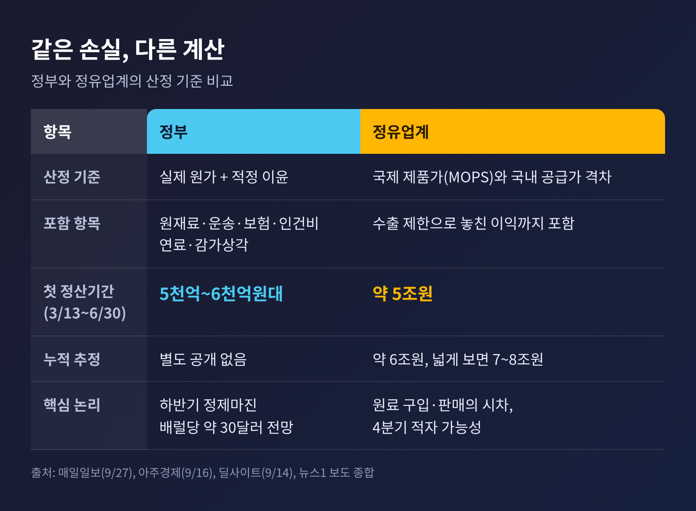
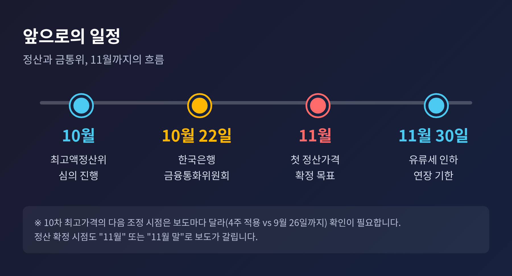

이번 글에서는 석유 최고가격제의 손실보전에 돈이 얼마나 드는지를 정리해 보겠습니다. 산업통상자원부(산업부)가 "가격 격차 100원당 1조 5천억 원"이라는 계산식을 국회에 낸 자료에서 확인됐다는 보도가 10월 4일 나왔습니다. 정유사와 정부가 손실 규모를 열 배 가까이 다르게 보는 이유도 함께 짚어 보겠습니다.
3줄 요약
1. 정부 최고가격과 시장 추정가의 격차가 리터당 100원 벌어질 때마다 보전금은 약 1조 5천억 원이 필요합니다.
2. 마련된 예비비는 4조 2천억 원입니다. 첫 정산 기간 손실을 업계는 약 5조 원, 정부는 5천억~6천억 원대로 계산합니다.
3. 첫 정산가격은 11월 확정이 목표입니다. 그 사이 10월 22일 한국은행 금융통화위원회가 변수로 놓여 있습니다.
10월 4일 여러 매체가 같은 내용을 전했습니다. 조지연 의원이 산업부에서 받은 자료입니다.
핵심은 계산식입니다. 최고가격제가 없었다면 형성됐을 추정 공급가격과 정부가 정한 최고가격의 차이가 100원일 때, 정유사 손실을 메우려면 약 1조 5천억 원의 예산이 든다는 것입니다. 산업부는 이 격차가 200원을 넘지 않을 것으로 가정했다고 합니다.
현재 적용 중인 10차 최고가격은 리터당 휘발유 1,784원, 경유 1,773원, 등유 1,380원입니다. 9월 18일 발표에서 앞선 가격이 그대로 유지됐습니다.

예비비는 3월 13일 제도를 시작할 때 목적예비비로 편성됐습니다. 산업부 설명에 따른 구성은 두 덩어리입니다.
완충분은 국회 예산정책처의 권고에서 나왔다고 보도됐습니다. 두 숫자를 더하면 4조 2천억 원대가 됩니다.
이 계산식을 단순 비례로 옮기면 이렇습니다. 격차 200원이면 3조 원 안팎이고, 2조 7,600억 원은 격차 180원대에 해당합니다. 다만 이는 이 글이 덧붙인 단순 환산입니다. 산정 기간과 품목 기준은 보도에 나오지 않았으므로 참고용으로만 보시길 권합니다.
또 하나 확인해 둘 대목이 있습니다. 예산 합계는 매체마다 다릅니다. 대부분 4조 2천억 원이라고 쓰지만, 매일일보는 약 5조 6,500억 원, 아주경제는 내년 예산에 4분기 손실용 1조 5천억 원이 따로 잡혔다고 적었습니다. 1조 5천억 원의 성격이 보도마다 달라 단정하기 어렵습니다.

최고가격제는 정유사가 주유소에 넘기는 가격에 상한을 두는 제도입니다. 월 수출량도 전년 동월을 넘지 못하게 묶었습니다. 정부는 그 대신 손실을 나중에 보전하겠다고 약속했습니다. 시행 후 반년이 넘도록 보전은 한 번도 이뤄지지 않았습니다.
효과는 분명히 있었습니다. 9월 소비자물가 상승률은 2.9%로 8월의 3.1%보다 낮아졌고, 정부는 최고가격제가 없었다면 3.5%였을 것으로 추정했습니다. 석유류는 여전히 1년 전보다 14.8% 올랐습니다. 경유는 20.0%, 휘발유는 11.8%입니다. 파이낸셜뉴스는 국내 석유제품 가격이 약 10% 오르는 동안 미국은 약 40% 올랐다고 전했습니다.
1년 전 브렌트유는 배럴당 65.96달러였습니다. 지금은 100달러대입니다. 가격표에서 눌린 부담은 사라진 것이 아닙니다. 정유사 장부와 정부 예비비로 자리를 옮겼을 뿐입니다.

Fortune에 따르면 10월 2일 브렌트유는 배럴당 103.37달러였습니다. 한 달 전은 97.34달러였습니다. 뉴시스는 같은 날 102.31달러로 전했고, 시점에 따라 약 102~104달러대에서 움직인 셈입니다.
공급 쪽 사정은 더 나쁩니다. 뉴시스가 모건스탠리를 인용해 전한 바로는 중동의 휘발유·경유·항공유 수출은 전쟁 이전보다 약 40% 줄었습니다. 원유 수출은 7% 감소 수준까지 회복됐지만, 중동에서 중국으로 가는 유조선 운임은 배럴당 35달러로 전쟁 직전(7달러 미만)의 약 5배입니다.
9월 10일 전후로 사우디 동서 송유관이 드론 공격으로 멈췄습니다. 호르무즈 해협을 피해 가던 우회로가 막힌 것입니다. 이투데이는 월스트리트저널을 인용해 하루 최소 250만 배럴의 공급이 차단됐다고 전했습니다. 국내 정유사는 9~10월 물량을 확보했고, 업계에서는 11월 물량이 관건이라는 말이 나옵니다(EBN, 9월 17일).
환율은 그나마 완충 역할을 했습니다. 원/달러는 10월 1일 1,358.4원에 마감했고, 2일 오전에는 1,364.9원까지 올랐습니다. 3월의 1,505원과 비교하면 약 10% 낮은 수준입니다. 수입 원가 부담을 일부 덜어 준 셈입니다.
숫자 차이는 계산 기준에서 나옵니다.

정부는 "실제 원가에 적정 이윤을 더한 금액"을 보전하겠다는 입장입니다. 원재료, 운송, 보험, 인건비, 연료, 감가상각이 들어갑니다. 정산 대상 기간은 3월 13일부터 6월 30일까지입니다.
업계는 싱가포르 국제 석유제품가(MOPS)와 국내 공급가의 차이, 그리고 수출을 묶어서 놓친 이익까지 손실에 넣어야 한다고 봅니다. 매일일보 보도로는 첫 정산 기간 약 5조 원, 누적 약 6조 원, 기준을 넓히면 7조~8조 원입니다. 정부 추정은 5천억~6천억 원대로, 뉴스1은 이를 열 배 차이라고 표현했습니다.
업계에는 시차 문제도 있습니다. 원료를 사 오는 때와 제품을 파는 때가 다르다는 것입니다. 2~3분기 이익만 보고 보전액을 정하면 이 시차 효과가 빠지고, 지금 같은 고유가에서는 4분기에 적자가 날 수 있다는 주장입니다(아주경제, 9월 16일).
정부 쪽 논리도 가볍지 않습니다. 이재명 대통령은 9월 12일 정유업을 "사상 최대 호황"이라고 표현했습니다. 딜사이트에 따르면 하반기 정제마진은 배럴당 약 30달러로 전망되며, 2025년 4분기 약 10달러의 세 배입니다. 이 글의 해석으로는, 정부가 보전 범위를 실제 원가 중심으로 좁게 잡는 배경이 여기 있어 보입니다.
기술적 쟁점도 남아 있습니다. 알뜰주유소 물량을 원유 도입가로 볼지 MOPS로 볼지, 석유화학 비중이 큰 한화토탈의 비용을 어떻게 가를지입니다(이데일리, 8월 27일).
제도 자체에 대한 지적도 있습니다. 국가재정전략연구원 보고서를 인용한 허핑턴포스트코리아 보도에 따르면 소득 하위 20% 가구의 66.7%는 연료 구매액이 0원입니다. 상위 20%는 4.6%입니다. 리터당 가격을 누르는 방식은 많이 쓰는 쪽에 유리하다는 뜻입니다. 이화여대 석병훈 교수는 가격 억제가 수요 관리 효과를 떨어뜨릴 수 있다고 짚었습니다.
한계도 밝혀 둡니다. 이 글은 보도된 수치에 근거하며, 정산위원회의 세부 산정표는 확인하지 못했습니다. 양쪽의 주장이 모두 부분적으로만 공개돼 있다는 점을 감안해 읽으시길 바랍니다.
앞으로의 일정은 대략 이렇습니다.

최고가격 자체의 다음 조정 시점은 확인이 필요합니다. 10차 동결의 적용 기간을 SBS Biz는 4주, 뉴데일리는 9월 26일까지로 서로 다르게 적었습니다.
거시 변수는 10월 22일 금통위입니다. 한은은 9월 물가를 설명하며 10월에는 3% 안팎으로 오를 것이라고 내다봤습니다. 시장에서는 7월과 8월 두 차례 인상의 효과를 지켜보며 동결 전망이 우세하다는 보도가 나왔습니다(블루밍비트, 10월 2일). 미국 9월 고용은 2만 9천 명 증가에 그쳐 시장 예상치 8만 4천 명을 크게 밑돌았고, 연준의 10월 동결 전망은 77.9%까지 올랐습니다(국민일보, 10월 3일). 연준의 긴축 압력이 줄면 원화 약세 부담은 덜 수 있지만, 국내 물가와 가계부채 때문에 한은의 결정은 쉽지 않다는 것이 뉴데일리의 진단입니다.
뉴데일리는 임시 정책이 끝나면 물가가 반등할 수 있다는 우려도 전했습니다. 최고가격제를 풀 때의 충격과, 유지할 때 쌓이는 재정 부담 사이에서 정부가 고르기 어려운 국면입니다.
유가가 오르면 격차가 벌어져 보전 소요가 커지고, 내리면 줄어듭니다. 150달러 시나리오는 예비비 완충분이 대비하는 극단적인 경우입니다. 다만 이 모두는 전망의 영역이며, 어느 방향도 단정할 수 없습니다.
이 글은 뉴스 해설이며 특정 종목·상품에 대한 투자 권유가 아닙니다. 정유·항공 등 관련 업종에 대한 투자 판단과 그 결과의 책임은 투자자 본인에게 있습니다.
정리하면 이렇습니다.
최고가격제는 물가를 눌렀지만 비용을 없애지는 못했습니다. 그 비용이 얼마인지를 두고 정부와 정유사는 아직 같은 숫자를 쓰지 않고 있습니다.
"가격표에서 사라진 비용은 장부 어딘가에 남는다."
그 청구서를 누가, 언제, 얼마나 나눠 낼지는 11월에 확정될 첫 정산가격이 먼저 보여 줄 것입니다.
참고한 보도 뉴스웨이·EBN·파이낸셜뉴스·글로벌이코노믹·직썰·핀포인트뉴스(이상 10월 4일), 매일일보(9월 27일), 아주경제(9월 16일), 딜사이트(9월 14일), 이데일리(8월 27일), 허핑턴포스트코리아·SBS Biz·뉴데일리(9월 18일), 뉴데일리·블루밍비트(10월 2~3일), 국민일보(10월 3일), 뉴시스·Fortune·KB경영연구소(10월 2일) 등. 상세 출처는 research.md 참조.